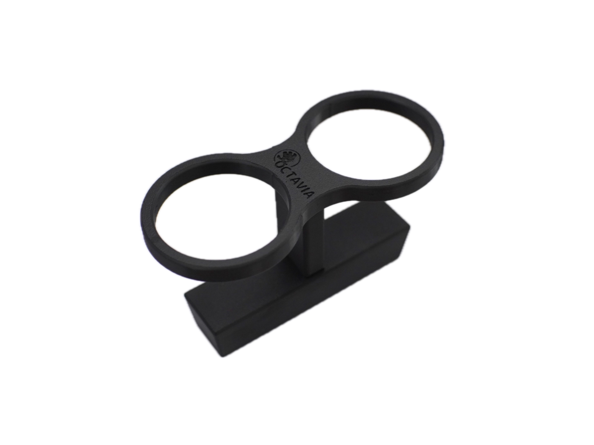
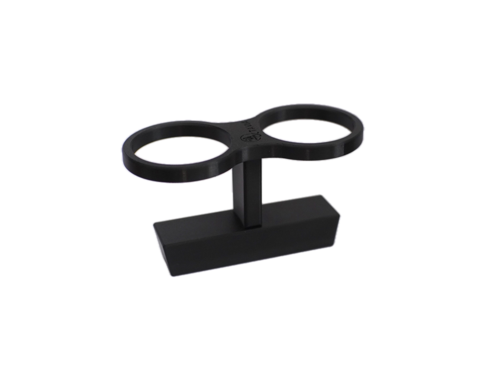
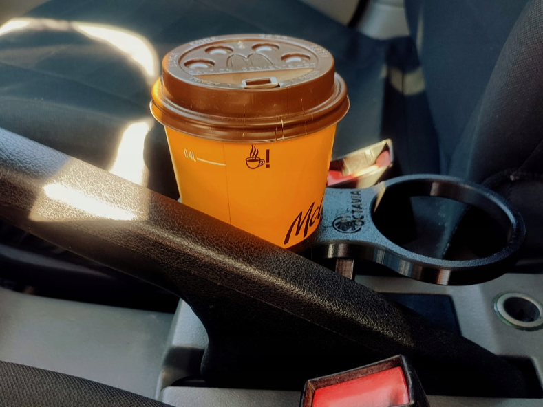
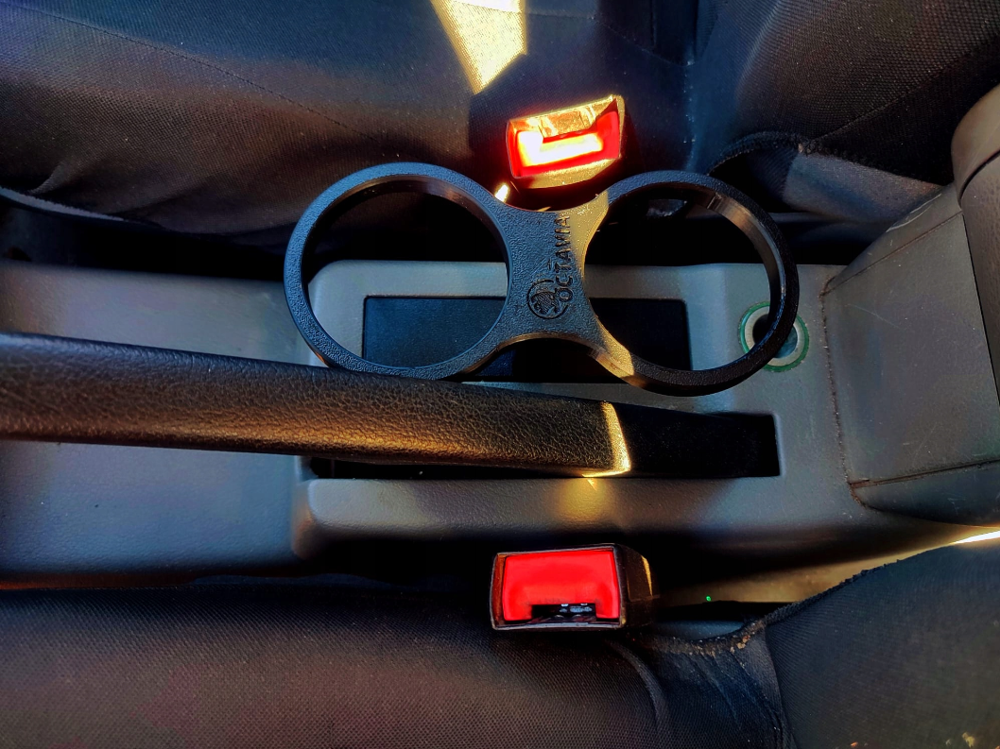

Cupholder Octavia 1




Cupholder Octavia 1
Cena: 62,99 zł
Opis produktu:
Uchwyt na napoje pasujący do Skody Octavi MK1. Montowany w tunelu środkowym. Cupholder wykonany jest za pomocą druku 3D, z materiału PET-G. Wierzchnie warstwy pokryte są lakierem. Otwory w uchwycie mają średnicę 74 mm. Uchwyt sprawdza się przy użyciu zarówno dużych puszek z napojami (500ml), z mniejszymi puszkami jak i z kubkami na kawę np MC.
UWAGA!
Uchwyt jest dostępny w dwóch wersjach kolorystycznych, czarnym (domyślny) oraz szarym. Podczas składania zamówienia w wiadomości dla sprzedającego należy wpisać wybrany kolor. W przypadku braku takiej wiadomości zostanie wysłany uchwyt w domyślnej wersji kolorystycznej tj. czarny